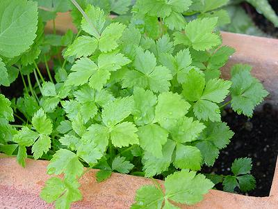
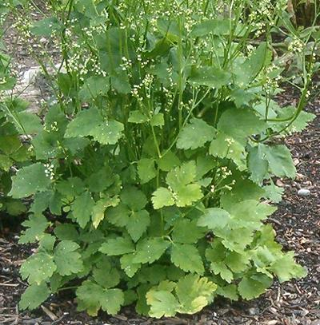

Mitsuba

[Mitsuba (Japan); Japanese wild parsley, Japanese cryptotaenia, Japanese
honewort, white chervil; San ye qin (China); Cryptotaenia japonica]
Native to Japan, Korea, eastern China, and Vietnam, this herb is called
for in many Japanese recipes. This is a problem, as Mitsuba is available
only in Japanese markets and in some Korean markets. The roots are also
edible.
Photo by Mbc licensed under Creative Commons
Attribution-ShareAlike v3.0 Unported.
Cooking:
This herb is used mainly raw or as a garnish, as
the flavor is destroyed and it becomes bitter with more than couple minutes
cooking. Tender stems may be blanched and used with the leaves. Roots are
blanched and used in stir fries and the like. Young sprouts are used in
salads.
Subst:
None exact. Flatleaf Parsley is more robust in flavor
and texture. Celery Leaf and Cilantro, or a combination, are also suggested.
More on Parsleys
Canadian Honewort

[Cryptotaenia canadensis]
Native in the United States from North Dakota south to Texas and east to
the to the Atlantic. In Canada, Manatoba east to the Atlantic. Some botanists
consider this to be the same species as Mitsuba, but others differ. In any
case, culinary usage for this plant is the same as for Mitsuba, including
edible roots.
Photo by BotBin licensed under Creative Commons
Attribution-ShareAlike v3.0 Unported.
More on Parsleys
py_mitsuz 220306 - www.clovegarden.com
©Andrew Grygus - agryg@clovegarden.com - Photos on this
page not otherwise credited are © cg1 -
Linking to and non-commercial use of this page permitted.